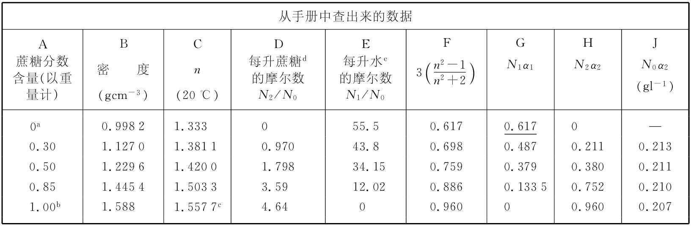

关于折射率理论还有另一个可以用实验来进行核对的预言。假设我们考虑一个含有两种材料的混合物。这混合物的折射率并非是两种折射率的平均值，而应当按式（32.34）所示的那样由两个极化率之和来给出。如果我们问起（比如说）糖溶液的折射率，那么总极化率就是水与糖的两个极化率之和。当然，每个极化率必须用该种物质单位体积内的分子数作为N来计算。换句话说，若给定溶液中有N1 个极化率为α1 的水分子和N2 个极化率为α2 的蔗糖（C12 H22 O11 ）分子，则应该有
可以通过测量不同浓度的蔗糖水溶液的折射率，应用此式对照实验结果来检验我们的理论。然而，这里我们得做几种假设。上面的公式假定当蔗糖溶解于水中时并没有发生化学反应，而对各个原子振子的扰动在不同浓度中差异不会太大。所以上述结果肯定只是近似的。不管怎样，还是让我们来看看这个式子到底如何有效。
选取蔗糖溶液这一例子是因为在《化学与物理学手册》（Handbook of Chemistry and Physics ）中有一个关于折射率测量值的很好的表，而且又因为蔗糖是一种分子晶体，所以在其溶解过程中并没有发生过电离或其他任何会改变其化学状态的事情。
我们在表32-2的头三行中给出从手册中查出来的数据。A列为蔗糖按重量计的百分比，B列为测得的密度（gcm-3 ），而C列则为用589.3nm波长的光时测得的折射率。对于纯的糖，我们已经取得了糖晶体折射率的测量值。这种晶体并非各向同性的，因而所测得的折射率沿各方向是不同的。该手册给出三个数值：
n1 =1.5376，n2 =1.5651，n3 =1.5705，
我们取其平均值。
表32-2 蔗糖溶液的折射率，与式（32.37）的预言做比较
a纯水；b蔗糖晶体；c平均值（见书中）；d蔗糖的分子量=342；e水的分子量=18。
现在我们可以试着算出每种浓度的n，但不知道对α1 或α2 取何值。让我们用这种方法来检验该理论：假定水的极化率（α1 ）在所有各种浓度时都相同，并利用n的实验值及从式（32.37）解出α2 从而算出蔗糖的极化率。如果这一理论正确，则对于所有浓度都应得到相同的α2 。
首先，必须知道N1 和N2 ：让我们用阿伏伽德罗数N0 来表示它们。试取1升（1000cm3 ）作为体积单位。于是Ni /N0 等于每升的质量除以克分子量。而每升的质量则是密度（乘1000后获得每升克数）乘以蔗糖或水的用分数表示的含量。就这样，得到了记在该表D和E两列中的N2 /N0 和N1 /N0 [4] 。
在F列，我们从C列中的实验n值算出了3（n2 -1）/（n2 +2）。对于纯水来说，3（n2 -1）/（n2 +2）为0.617，那恰好是N1 α1 。然后我们便能填上G列中的其余部分，因为对于每一行G/E只容许有相同的比值——即0.617∶55.5。从F列减去G列，便得到蔗糖的N2 α2 那一部分贡献，如H列所示。把这些数字用D列中的N2 /N0 值来除，我们便得到如J列所示的N0 α2 的值。
根据我们的理论，应该预计所有的N0 α2 值都相同。它们虽然并不完全相同，但也相当接近。可以得出结论说，我们的想法是相当正确的。而且，我们还发现糖分子的极化率似乎与其周围环境的关系不是太大——它的极化率在稀溶液与在晶体中几乎相同。